Click on the images below:
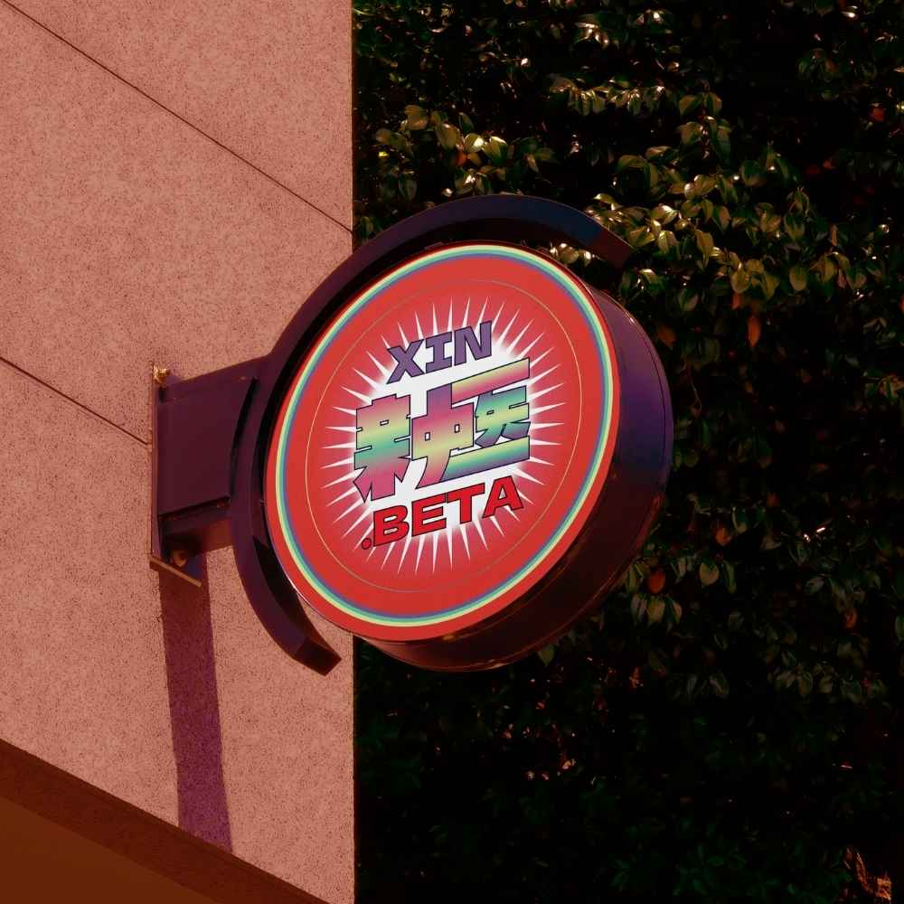
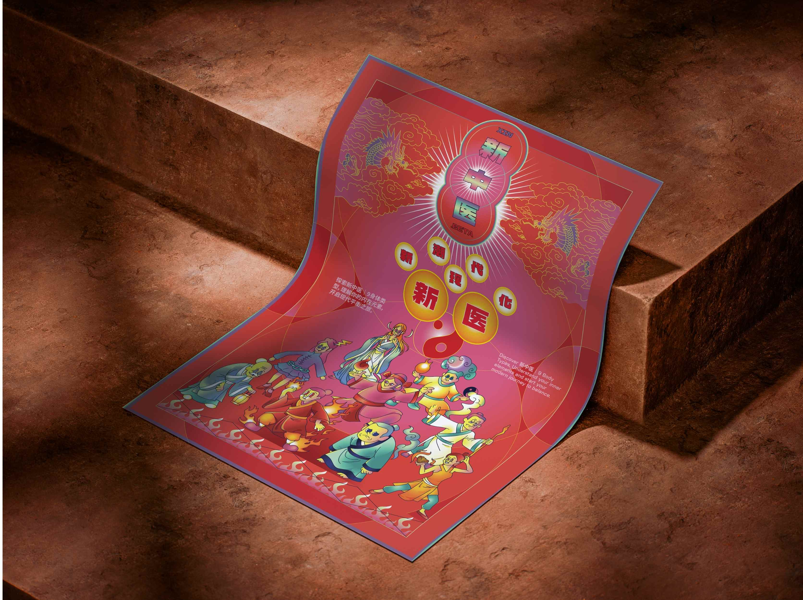
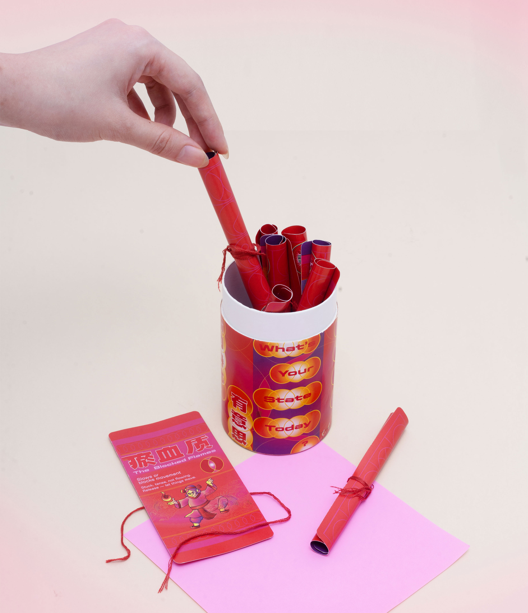
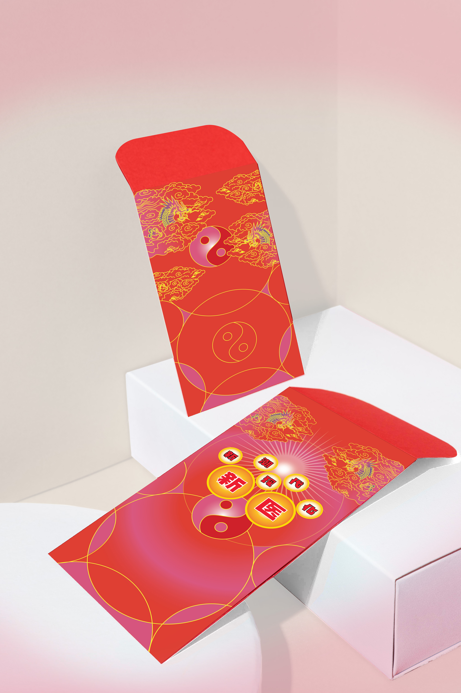
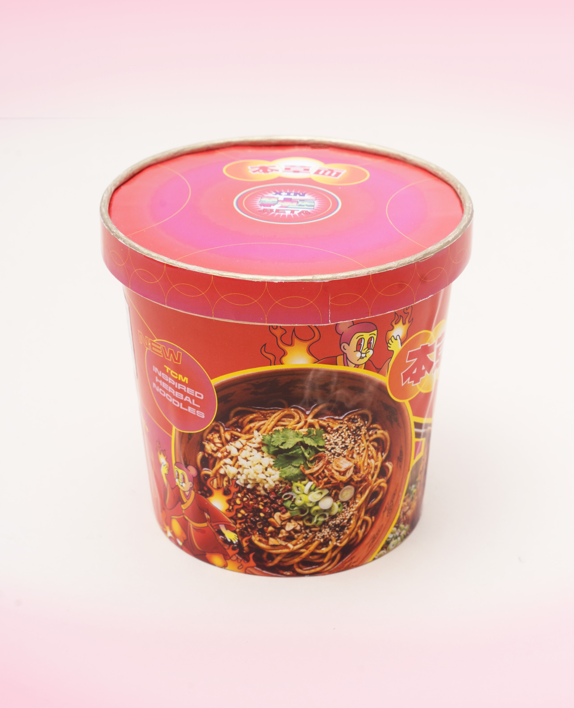
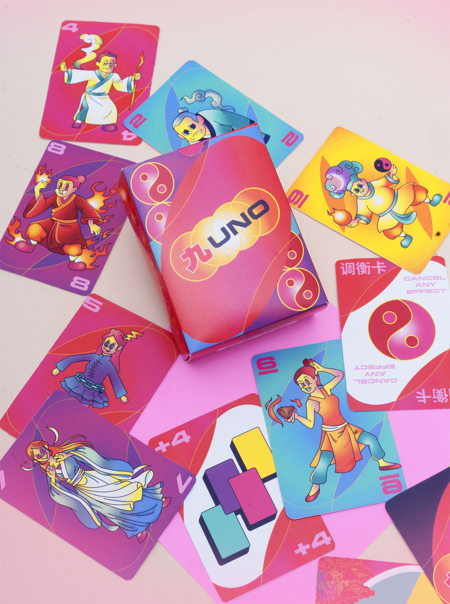
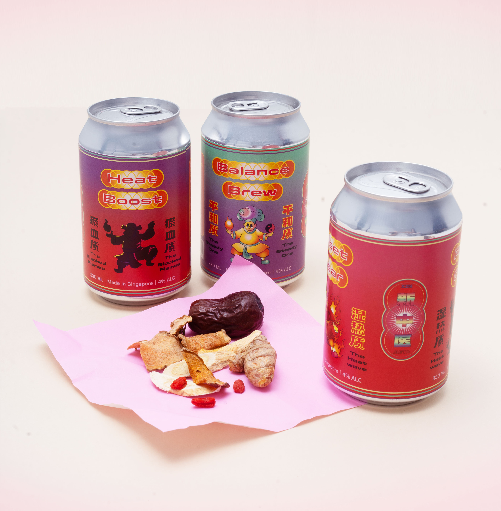
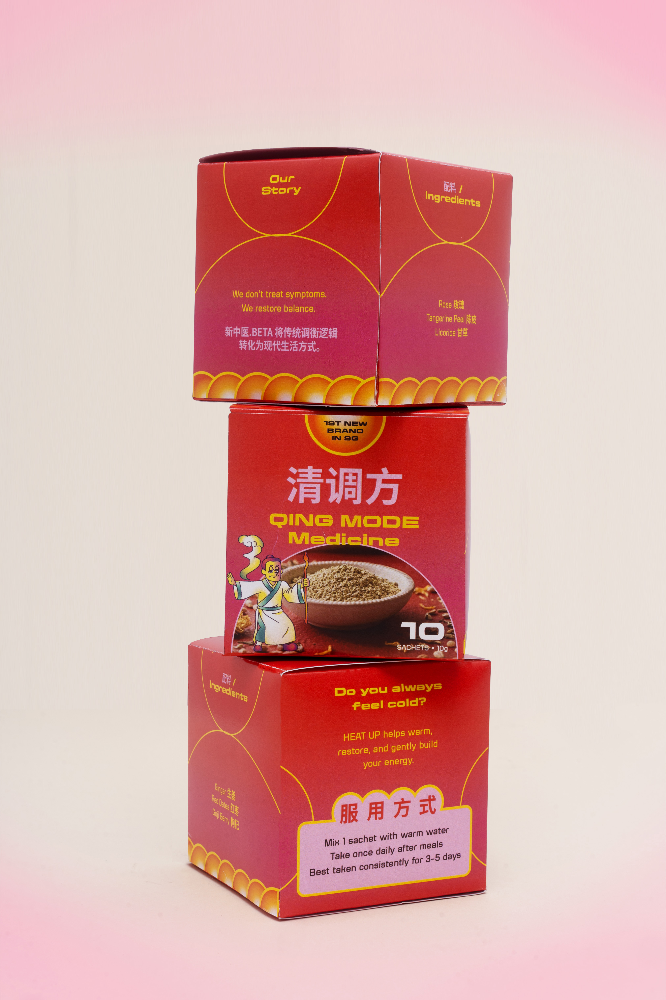
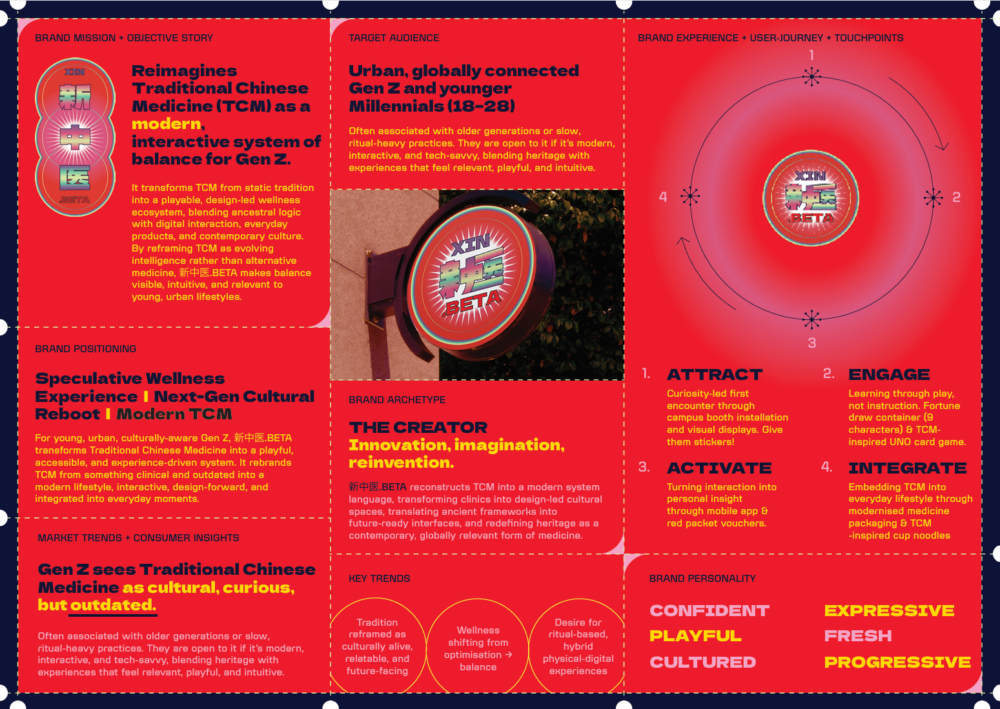
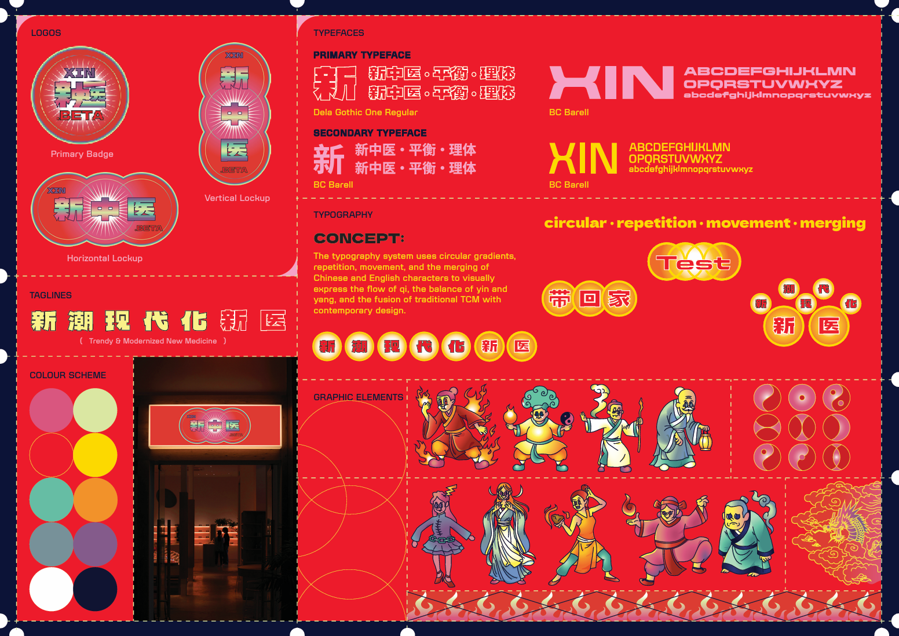
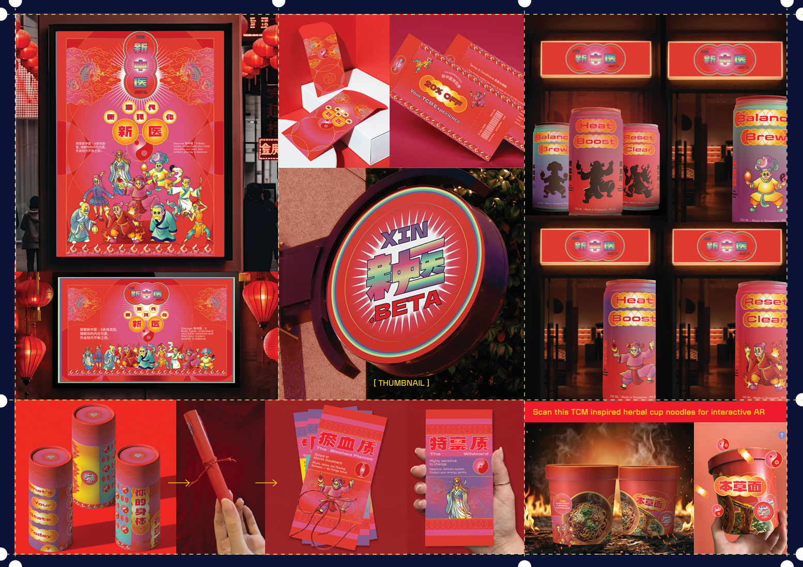
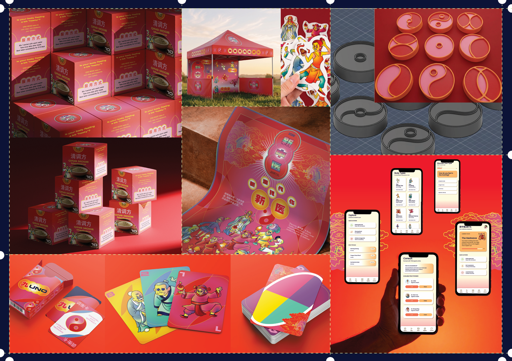
May 2026
XIN.BETA
XIN.BETA repositions Traditional Chinese Medicine (TCM) as a dynamic, experience-led framework for contemporary balance, designed specifically for Gen Z sensibilities.
Rather than preserving TCM as a fixed or historical system, the project reframes it as a living cultural language—fluid, interpretable and embedded within everyday interaction. Its core ambition is to shift perception from instruction to immersion, allowing users to understand principles such as yin-yang balance, energy flow and elemental harmony through intuitive, sensory engagement rather than clinical explanation.
Through playful interfaces, interactive rituals and context-aware experiences, XIN.BETA translates abstract wellness philosophies into tangible, accessible moments within daily life. This approach encourages users to engage with health not as a set of rules, but as an evolving dialogue between body, environment and behaviour. In doing so, it challenges dominant Western-centric models of modern medicine that often prioritise separation between mind, body and culture.
Instead, the project positions TCM as adaptive and future-facing—capable of coexisting with digital lifestyles, social platforms and hybrid realities. It draws on cultural heritage not as nostalgia, but as a design resource for innovation, reframing tradition as a tool for experimentation. Ultimately, XIN.BETA proposes a shift in how wellness systems are experienced: from static knowledge to embodied exploration, where balance becomes something learned through participation, not prescription.